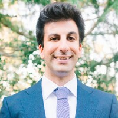
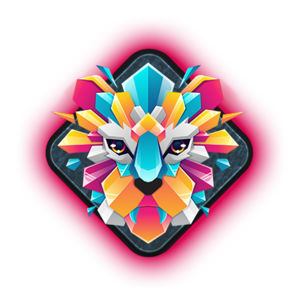
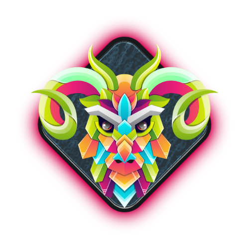

THE PERSON BEHIND THE NOTES
I’m Jacob
An AI Security Engineer with a background in cloud security engineering and security architecture.
I take a holistic approach to AI security, working across LLMs, RAG pipelines, agentic systems, and the infrastructure and services that support them. I embed myself across these layers to understand how systems are built, where security risks emerge, and how layered protections can address them.

01 / FOCUS
What I work on
02 / CREDENTIALS
Certifications
OSAI · Advanced AI Red TeamingOffSec · In progress
GCPN · Cloud Penetration TesterGIAC / SANS Institute
GRTP · Red Team ProfessionalGIAC / SANS Institute
External Pentest PlaybookTCM Security

OSINT FundamentalsTCM Security

03 / TOOLKIT
Tools I use
AI Testing & Guardrails
- NeMo Guardrails
- Garak
- Promptfoo
- Strix.AI
- DeepTeam
Cloud & infrastructure
- Google Cloud
- AWS
- Kubernetes
- Containers
- Terraform
Engineering & Automation
- Python
- Bash
- GitHub Actions
- Trivy
- TruffleHog
04 / OFFLINE
Beyond security
I’m a husband and father, and outside of work I enjoy traveling with my family, going to local beaches (San Clemente, Laguna Beach, and Crystal Cove are my favorites), and exploring the outdoors.
I also enjoy trying new restaurants, going to farmers markets and taking care of my physical and mental health through exercise, meditation, and reading.